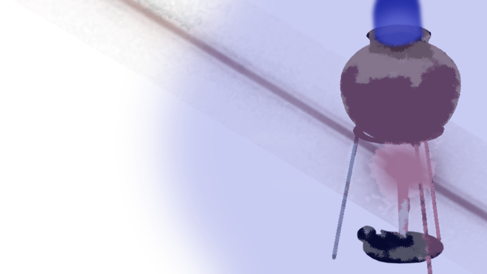
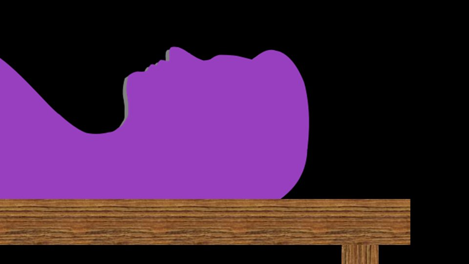
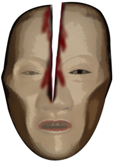
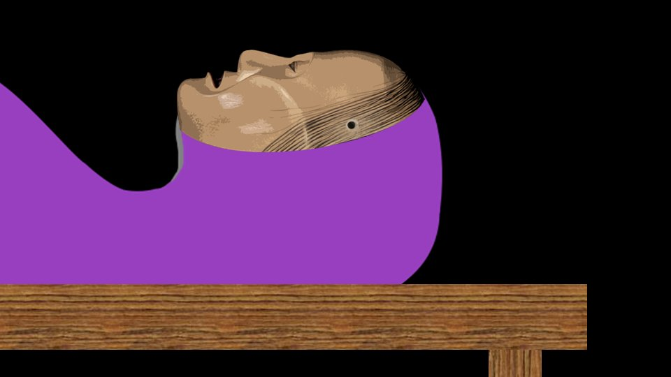
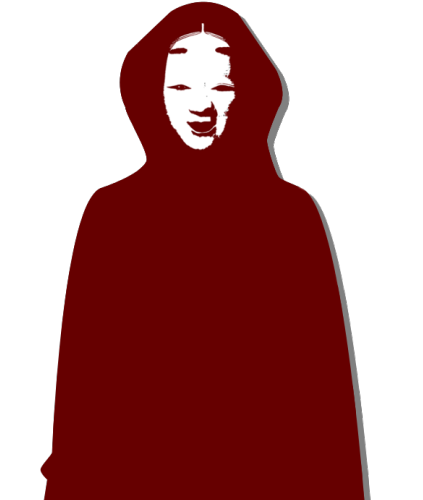

A Decision for Happiness

"............"

"............"
"............"
The three of us were on the train headed for the Arata settlement.
Haruka's mom had gone on ahead.
Understandably, I couldn't get into a vacation mood like last time.
The three of us were on the train headed for the Arata settlement.
Haruka's mom had gone on ahead.
Understandably, I couldn't get into a vacation mood like last time.
"Is Chiga-nee coming too...?"
"Of course she's coming... After what happened."
Haruka's voice had no strength in it.
Haruka's voice had no strength in it.
We'd be arriving at the last station soon.
Again, Haruka's mom was going to come meet us at the station.
Again, Haruka's mom was going to come meet us at the station.
"Mm... It's been a while."

"Oh, Chiga-nee..."
It looked like she'd gotten on at the previous station.
It looked like she'd gotten on at the previous station.

"Chiga-nee, you're coming in Mom's car too?"
"Mm... That's right. I thought you would have heard from Auntie?"
"Oh, uh, did she...?"
This was definitely just a case of Haruka not remembering.
The whole way, Haruka's mind had been somewhere else too, so it was no wonder.
"Mm... That's right. I thought you would have heard from Auntie?"
"Oh, uh, did she...?"
This was definitely just a case of Haruka not remembering.
The whole way, Haruka's mind had been somewhere else too, so it was no wonder.

"Mm... Hello, Goto-chan."
Chiga-nee leaned her face in close to Goto.
Chiga-nee leaned her face in close to Goto.

"............
Hello..."
Goto's standoffish reply.
Goto's standoffish reply.
"Mm... Hehe. I like the first-impression Goto-chan too, but I like the Goto-chan of right now as well."
"I see..."
Goto gave another slightly standoffish reply.
Is Goto in a bad mood today?
Goto gave another slightly standoffish reply.
Is Goto in a bad mood today?

When we arrived at Arata Station and went through the ticket gate, Haruka's mom was waiting.

"You must be tired. Put your bags in here."
Sure enough, even the always-cheerful Obasan seemed quite worn out.
Her voice was a little gloomy too.
Sure enough, even the always-cheerful Obasan seemed quite worn out.
Her voice was a little gloomy too.

We were rocked along in the slow-moving car.
It was as quiet as if we were on our way to a funeral.
No, this time it really is a funeral.
It was as quiet as if we were on our way to a funeral.
No, this time it really is a funeral.
Was nobody talking because everyone was tired, or because nobody was in the mood to talk?
If we'd been in the same mood as 1 month ago, this car would surely have been lively too.
If we'd been in the same mood as 1 month ago, this car would surely have been lively too.
When we reached the settlement, we went straight to the meeting hall.

Erika-chan's memorial photo had been set up, and the same urns and tripods as before were lined up.

And Erika-chan's remains, too.
This time, the mourners were us, Obasan, Chiga-nee, and then Kana-chan and Shirozaki-san.
This time, the mourners were us, Obasan, Chiga-nee, and then Kana-chan and Shirozaki-san.
All the other residents had been arrested, and apparently they were still being held in custody.
So Shirozaki-san really hadn't joined in the attack 1 month ago, it seemed.
So Shirozaki-san really hadn't joined in the attack 1 month ago, it seemed.
Standing in for the Grand Witch, Obasan was presiding over the funeral.
What was done wasn't much different from the thirteenth-year memorial service.
Of course, there was no such thing as hacking the body apart with a nata, but―
The funeral itself was over much more quickly than before.
What was done wasn't much different from the thirteenth-year memorial service.
Of course, there was no such thing as hacking the body apart with a nata, but―
The funeral itself was over much more quickly than before.
I stood before Erika-chan's remains and took out what I'd been entrusted with from inside the front of my clothes.

The Grand Witch's Noh mask, which had protected my life―
In the end, I had never handed it over to the police.
In the end, I had never handed it over to the police.

I placed the Grand Witch's Noh mask over Erika-chan's face.
With this, I've been able to return it to its rightful owner.
It's bent out of shape and stained with blood, but it's the best proof there is that it saved me.
The Grand Witch-samas of every generation protected me.
Thank you, Erika-chan.
With this, I've been able to return it to its rightful owner.
It's bent out of shape and stained with blood, but it's the best proof there is that it saved me.
The Grand Witch-samas of every generation protected me.
Thank you, Erika-chan.
Tomorrow, Erika-chan will be buried in the ground in the communal graveyard.
Burial in the ground is a tradition of the Arata settlement, and apparently it's still carried on today.
Burial in the ground is a tradition of the Arata settlement, and apparently it's still carried on today.
Just then,
Goto placed an envelope beside Erika-chan.
Goto placed an envelope beside Erika-chan.
"Goto, what's that?"
"It's a letter I wrote to Erika-chan. I wrote it the day before yesterday, but I forgot to send it..."
So that's why it's 'hand-delivered.'
"It's a letter I wrote to Erika-chan. I wrote it the day before yesterday, but I forgot to send it..."
So that's why it's 'hand-delivered.'
The day before yesterday means it was still before Erika-chan passed away.
She must have written to Erika-chan, whom she'd accepted as a friend and who had accepted her, that she was eagerly looking forward to seeing her again.
For Goto, having their reunion take this form must be far too regrettable.
She must have written to Erika-chan, whom she'd accepted as a friend and who had accepted her, that she was eagerly looking forward to seeing her again.
For Goto, having their reunion take this form must be far too regrettable.
I left the meeting hall with Goto to head for the Niimura main house, our lodging for tonight.
Haruka was apparently staying at the meeting hall a while longer to help prepare for tomorrow.
Haruka was apparently staying at the meeting hall a while longer to help prepare for tomorrow.


"Somehow... that was a simple funeral, so simple it was almost too simple..."
And just then,
And just then,

"Natsumi-chan..."
I knew right away from the voice that it was Shirozaki-san.
I knew right away from the voice that it was Shirozaki-san.
"Shirozaki-san, thank you for what you did back then."
"It was nothing much... I had a bad feeling, so I wanted to get word to you somehow. I'm glad it was in time."
"It was nothing much... I had a bad feeling, so I wanted to get word to you somehow. I'm glad it was in time."
"Uh, Shirozaki-san, there's a lot I'd like to ask you..."
"Yeah, I imagine there's plenty you're still wondering about. You're welcome to stop by my place."
"Thank you."
Goto apparently intended to confirm the truth behind the curse-killings.
But that...
"Yeah, I imagine there's plenty you're still wondering about. You're welcome to stop by my place."
"Thank you."
Goto apparently intended to confirm the truth behind the curse-killings.
But that...
"Kogori-senpai, what about you? Are you coming too?"
Learning the truth brings misfortune―
Ojisan told me that, and so did that fortune-teller.
Learning the truth brings misfortune―
Ojisan told me that, and so did that fortune-teller.
"Goto, I'm heading back to the house."
"............ Understood! Shirozaki-san, I'm sorry, but I'll be heading back too after all."
"I see. You must be tired today. Feel free to come by again whenever you like."
Goto seemed to have picked up on what I meant.
"............ Understood! Shirozaki-san, I'm sorry, but I'll be heading back too after all."
"I see. You must be tired today. Feel free to come by again whenever you like."
Goto seemed to have picked up on what I meant.

"Phew..."
I went into the room on the second floor and took off the Noh mask and red robes.
Goto had come away with me without saying anything, but maybe I should explain things properly after all.
I went into the room on the second floor and took off the Noh mask and red robes.
Goto had come away with me without saying anything, but maybe I should explain things properly after all.

"When Kotaro-san attacked me, I made a promise with Ojisan in a dream.
'I won't chase the truth.'"
"Niimura-senpai's father...?"
"Yeah, so... so I think I'm going to stop digging into it any further."
"............"
"Niimura-senpai's father...?"
"Yeah, so... so I think I'm going to stop digging into it any further."
"............"
"I'm sure nothing good will come of chasing it."
"Uh, Kogori-senpai..."
"Hm?"
"Uh, Kogori-senpai..."
"Hm?"
"I've been thinking lately.
Why is it that around this time of year, when we stand in the wind, we can hear Niimura-senpai's father's voice?"
"Huh? That's... Ojisan is doing it to help us, even after his death―"
"I'm sorry, Senpai. Lately, I just can't see it that way."
"What do you mean?"
"Huh? That's... Ojisan is doing it to help us, even after his death―"
"I'm sorry, Senpai. Lately, I just can't see it that way."
"What do you mean?"

"But, Senpai...!
It really is strange! Hearing a dead person's voice!"
"But...!"
"I know! I know that voice has saved you so many times! But..."
"But...!"
"I know! I know that voice has saved you so many times! But..."

With that, Goto dropped her gaze.
Rejecting something without giving any grounds isn't like Goto.
Rejecting something without giving any grounds isn't like Goto.
Goto's meaning is clear to me.
It isn't that she wants to deny my danger sense.
Goto just has a vague feeling that something is off.
She thinks something about my danger sense and the curse-killings doesn't fit together.
It isn't that she wants to deny my danger sense.
Goto just has a vague feeling that something is off.
She thinks something about my danger sense and the curse-killings doesn't fit together.
"Senpai, tomorrow I'm going to go see Shirozaki-san.
And I want to chase the truth."
"............"
"I'm not thinking of dragging anyone else into it. It's only for my own self-satisfaction."
"............"
"I'm not thinking of dragging anyone else into it. It's only for my own self-satisfaction."
"Hey, can I ask you one thing?"
"Yes."
"You've got some lead in mind, haven't you? A lead that'll get you to the truth."
"Yes."
"You've got some lead in mind, haven't you? A lead that'll get you to the truth."
"I do have one, yes.
But this is my problem alone now. I don't want to drag you into it, Kogori-senpai.
Senpai, the warning you got means that for you, Senpai, seeking the truth is dangerous."
Honestly, I don't know how to judge this.
It's true that I was warned not to seek the truth.
Even so, it nags at me that seeking the truth might be the better choice.
Honestly, I don't know how to judge this.
It's true that I was warned not to seek the truth.
Even so, it nags at me that seeking the truth might be the better choice.
But I've had advice from one more person.
That fortune-teller I met at the hot spring.
That fortune-teller I met at the hot spring.

"If you want happiness, then even if a great mystery stands in your way, you mustn't pursue it any further.
But whether you do is up to you."
"I...
No, I understand. It's better not to know the truth, right?"
"Yes, that's best. You're a good, honest girl."
"Yes, that's best. You're a good, honest girl."
"Hey, Goto, do you think learning the truth can ever make you unhappy?"
"It can. I've hit upon exactly that kind of hypothesis. Sometimes you're happier not knowing. Sometimes knowing makes you unhappy. But...!
"It can. I've hit upon exactly that kind of hypothesis. Sometimes you're happier not knowing. Sometimes knowing makes you unhappy. But...!
Even so, there's someone behind all this who's gloating!
I can't forgive that!"
If I want happiness, I mustn't pursue it.
But what I do is up to me.
This is Goto we're talking about. Even if I stop her, she'll surely keep investigating on her own.
But what I do is up to me.
This is Goto we're talking about. Even if I stop her, she'll surely keep investigating on her own.
"Goto, I...
Erika-chan passed away in May.
It's not as if people from the Arata settlement always die in April.
So there must have been some reason the people before her died in April.
I'm sure Erika-chan died a natural death.
Erika-chan got to live out her natural span, and I'm content with just that..."
"So this is where I'll stop.
From here on, what you do, Goto, I leave to you.
This is where I stop.
Goto, try doing things the way you think is right."
"Senpai..."
And then Goto's shoulders began to tremble.
"Senpai..."
And then Goto's shoulders began to tremble.
"I...
Senpai, am I going to end up betraying you...!?
Senpai, you're saying it shouldn't be pursued, and yet I...!"
"Goto... Hey, Goto?"
I bent down toward Goto, who's short, and peered into her face.
Then I gently laid a hand on her cheek and slowly tilted Goto's face upward.
"Goto... Hey, Goto?"
I bent down toward Goto, who's short, and peered into her face.
Then I gently laid a hand on her cheek and slowly tilted Goto's face upward.
"Goto, I'm sure you can do it.
But if it ever gets hard, you can lean on me anytime."
"Senpai..."
"Senpai..."
"That's what's good about you, Goto.
That sense of justice, that's what makes you Goto."
At that, Goto bowed her head low.
"Senpai...! Thank you...!"
At that, Goto bowed her head low.
"Senpai...! Thank you...!"
We had chosen separate paths.
Seeking the truth: Goto.
Giving up on the truth: me.
Seeking the truth: Goto.
Giving up on the truth: me.
Things are sure to head in a good direction.
All we can do is trust in the choices we made.
All we can do is trust in the choices we made.
"Uh, Senpai, there's one more thing on my mind...
Right now, the only people living in this settlement are Kana-chan and Shirozaki-san, right?"
"Yeah... Everyone got arrested, and Erika-chan passed away too, so..."
"Yeah... Everyone got arrested, and Erika-chan passed away too, so..."
"What's going to happen to Kana-chan now...?
Shirozaki-san is an adult, so I think he'll manage somehow, but Kana-chan doesn't know anywhere but here.
Honestly, more than the truth, it's Kana-chan I'm worried about."
"Well then, Goto, how about inviting Kana-chan to Motoki-cho? Then there'd be nothing to worry about, right?"
"Well then, Goto, how about inviting Kana-chan to Motoki-cho? Then there'd be nothing to worry about, right?"
"But then Shirozaki-san would be all alone.
Sooner or later, he'd move away from the Arata settlement too, wouldn't he?
And then the Arata settlement would die out.
Erika-chan wanted to change this place, and it would just disappear..."
"But it'd only be until Chiga-nee comes back from studying abroad.
Chiga-nee will surely live here once she's back, so until then..."
"You're right... Chiga-nee, huh..."
"You're right... Chiga-nee, huh..."
Goto still didn't seem convinced.
Goto cared about both Kana-chan and the Arata settlement.
Even if only for a while, the Arata settlement would be left with no one in it.
Goto cared about both Kana-chan and the Arata settlement.
Even if only for a while, the Arata settlement would be left with no one in it.
"I think I'll try talking to Kana-chan and the others tomorrow.
Chiga-nee―I'll ask if they'd like to live with us in Motoki-cho until she comes back from studying abroad.

I'm sure Dad and Mom and Sis will be fine once I explain!"
"Goto, you mean you'd take her in at your house? And just now, you said 'Sis'..."
"Goto, you mean you'd take her in at your house? And just now, you said 'Sis'..."
"Heh heh. It looks like Sis and I might make up.
Kogori-senpai, she said she'd like to meet you and Niimura-senpai both!"
"I see... That's great, Goto! I'm sure things will keep turning out for the better from here on!"
"I see... That's great, Goto! I'm sure things will keep turning out for the better from here on!"
"Yes! I love everybody in Motoki-cho, after all!
So...
So, Senpai...
please keep looking after me from here on!"
Goto grinned.
It was the first time in a while I'd seen Goto smile.
Goto grinned.
It was the first time in a while I'd seen Goto smile.
"What's with the formality! You don't have to ask, I'll look after you!"
Kana-chan might be coming to Motoki-cho.
That's surely the number-one best choice.
And when Chiga-nee comes back from studying abroad, things will start moving again toward rebuilding the Arata settlement.
Kana-chan might be coming to Motoki-cho.
That's surely the number-one best choice.
And when Chiga-nee comes back from studying abroad, things will start moving again toward rebuilding the Arata settlement.
I can't hear the cherry's voice anymore, but...
I'm sure this place will be reborn as somewhere even more wonderful.
That groundless conviction had begun to grow in both me and Goto.
I'm sure this place will be reborn as somewhere even more wonderful.
That groundless conviction had begun to grow in both me and Goto.
Read ✓ Next in this arc →